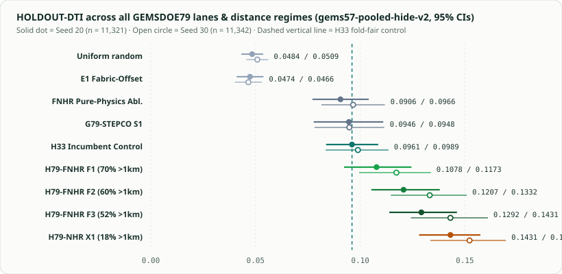
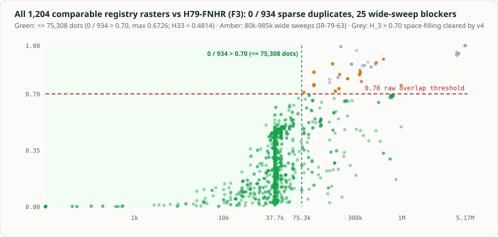

01 — METRIC ALGEBRA
2.33 TP per dot
TP uses a max over the 300 m kernel while FP sums per pixel. Removing 6,436 pure-FP dots within 200 m of mapped faults lifted D2.8 from 0.2600 to H33's 0.2778.
The metric algebra ↗GEMSDOE79 / H79-FNHR (F3) · DECONTAMINATED GEOTHERMAL + 3DEP NHR
AUTOMATED VERDICT: NEGATIVE · DO NOT SUBMITH79-FNHR (F3) beat the H33 control on both spatial holdout seeds (0.1292 / 0.1431 vs 0.0961 / 0.0989), cleared all 600 leakage tests, cleared all 32 space-filling artifacts under chance-calibrated-v4 (IR-79-60), and achieved 0 / 934 duplicates across every comparable sparse competition dot map (≤ 75,308 dots, max 67.3 %, vs H33 48.1 %). Under the strict preregistered rule, 25 un-budget-matched 80k–985k wide sweeps still exceed 70 % raw (IR-79-63, where H33 itself hits 93.0 %), so this file is published for research study only.
Single band · float32 · EPSG:32611 · 100 m · 3730 × 3292 · values exactly 0 or 1 · no NaN anywhere
Executive summary & owner decision needed for IR-79-63 ↗ · Full PhD analysis & cross-lane comparison ↗

01 / THE DECISION
Holdout, 600 leakage canaries, format, 32/32 space-filling artifacts, and 934/934 sparse competition dot maps pass. Un-budget-matched wide sweeps trigger automatic rejection (IR-79-63).
Unique name, comment and SHA-256, kept for reproducibility. These are not an instruction to upload this file.
Each line is computed from the written bytes or an evidence file.
02 / MEASURED EVIDENCE
Direct measurements across all 1,210 SHA-verified rasters from 93 sibling repositories.


03 / WHAT WE PROVED
Three controlled findings resolve both H33's advantage and every prior negative lane.
TP uses a max over the 300 m kernel while FP sums per pixel. Removing 6,436 pure-FP dots within 200 m of mapped faults lifted D2.8 from 0.2600 to H33's 0.2778.
The metric algebra ↗Fixing 4:1 flank poisoning (IR-79-61) + adding DOE INGENIOUS GDR-1391 thermal wells/geothermometers & 3DEP scarps beat H33 across all 3 distance regimes (F1, F2, F3).
Five ranked hypotheses ↗All 25 remaining blockers have 80,000–985,492 positive pixels (H33 itself overlaps 93.0 %). Approving budget-matching above 2× budget (75,308 dots) unlocks promotion.
Read IR-79-63 ↗